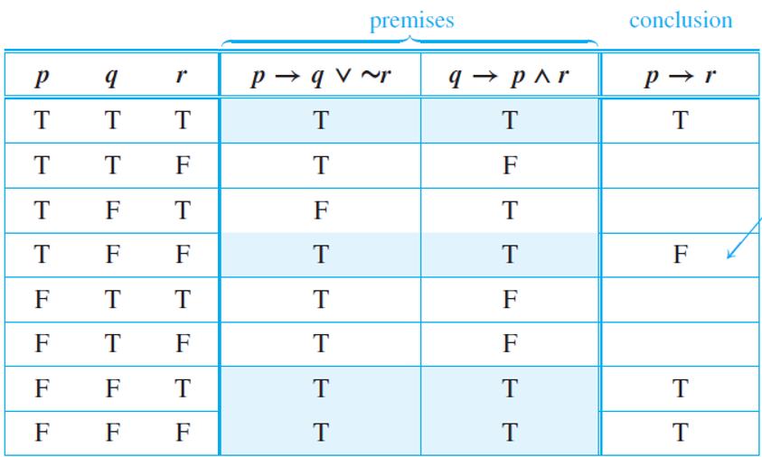
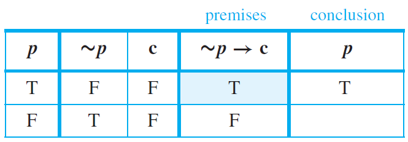

TOPIC 1.3
Valid and Invalid Arguments
TOPIC 1.3
Valid and Invalid Arguments
1.3 Valid and Invalid Arguments
Lesson Objectives
- Recognize different argument forms.
- Test argument forms for validity.
- Familiarize the different rules of inference.
- Apply the rules of inference in proving argument forms.
- Recognize fallacies and their types.
Recognizing Argument Forms
In mathematics and logic, an argument is not a dispute. It is a sequence of statements ending in a conclusion. In this section we show how to determine whether an argument is valid—that is, whether the conclusion follows necessarily from the preceding statements. We will show that this determination depends only on the form of an argument, not on its content.
An argument is a sequence of statements, and an argument form is a sequence
of statement forms. All statements in an argument and all statement forms in an
argument form, except for the final one, are called premises (or assumptions or
hypotheses). The final statement or statement form is called the conclusion. The
symbol $$∴$$, which is read “therefore,” is normally placed just before the conclusion.
To say that an argument form is valid means that no matter what particular statements
are substituted for the statement variables in its premises, if the resulting
premises are all true, then the conclusion is also true. To say that an argument is
valid means that its form is valid.
If $$p$$ then $$q$$. $$p$$. $$∴q$$.
Determining Validity or Invalidity
The following are the steps in testing an argument form for validity:
- Identify the premises and conclusion of the argument form.
- Construct a truth table showing the truth values of all the premises and the conclusion.
- A row of the truth table in which all the premises are true is called a critical row.
- If there is a critical row in which the conclusion is false, then it is possible for an argument of the given form to have true premises and a false conclusion, and so the argument form is invalid.
- If the conclusion in every critical row is true, then the argument form is valid.

The second critical row shows that an argument of this form can have true premises and a false
conclusion. Hence this form of argument is invalid.
Rules of Inference
An argument form consisting of two premises and a conclusion is called a syllogism. The first and second premises are called the major premise and minor premise, respectively. A rule of inference is a form of argument that is valid.
The most famous form of syllogism in logic is called modus ponens (Latin meaning: method of affirming) while a similar form of it is modus tollens (Latin meaning: method of denying). They have the following forms:
If $$p$$ then $$q$$.
$$p$$.
Therefore $$q$$.
If $$p$$ then $$q$$.
$$\sim q$$.
Therefore $$\sim p$$.
(Modus Ponens) If the sum of the digits of 371,487 is divisible by 3,
then 371,487 is divisible by 3.
The sum of the digits of 371,487 is divisible by 3.
$$∴$$ 371,487 is divisible by 3.
(Modus Tollens) If Zeus is human, then Zeus is mortal.
Zeus is not mortal.
$$∴$$ Zeus is not human.
An intuitive explanation for the validity of modus tollens uses proof by contradiction. Based on the previous example, suppose (1) If Zeus is human, then Zeus is mortal; and (2) Zeus is not mortal. Must Zeus necessarily be nonhuman? Yes! Because, if Zeus were human, then by (1) he would be mortal. But by (2) he is not mortal. Hence, Zeus cannot be human.
The following are some other essential rules of inference:
-
Generalization. $$(p, ∴ p ∨ q)$$
Example: Anton is a junior.
$$∴$$ (more generally) Anton is a junior or Anton is a senior. -
Specialization. $$(p ∧ q, ∴ p)$$
Example: Ana knows numerical analysis and Ana knows graph algorithms.
$$∴$$ (in particular) Ana knows graph algorithms. -
Elimination. $$(p ∨ q, ∼q, ∴ p)$$
Example: John got an A or B in the card. John did not get an A.
$$∴$$ John got a B in the card. -
Transitivity. $$(p →q, q →r, ∴ p →r)$$
Example: If 36 is divisible by 18, then it is divisible by 9. If 36 is divisible by 9, the sum of its digits is divisible by 9.
$$∴$$ If 36 is divisible by 18, then the sum of its digits is divisible by 9. -
Proof by division into cases. $$(p ∨ q, p →r, q →r, ∴ r)$$
Example: $$x$$ is positive or $$x$$ is negative. If $$x$$ is positive, then $$x^{2} \gt 0$$. If $$x$$ is negative, then $$x^{2} \gt 0$$.
$$∴ x^{2} \gt 0$$. -
Contradiction rule. $$(\sim p \rightarrow F, ∴ p)$$
The concept of logical contradiction can be used to make inferences through a technique of reasoning called the contradiction rule:
If you can show that the supposition that statement p is false leads logically to a contradiction, then you can deduce that p is true. The truth table below presents the validity of the above argument form.

There is only one critical row in which the premise is true,
and in this row the conclusion is also true. Hence this form of argument is valid.
Complex Deduction of Arguments
Now that we learned the basic rules of inference as shown above, we are going to analyze, deduce, and verify various complex argument forms involving more variables and premises. This involves utilizing several rules of inference in the right order to properly deduce statements and form valid conclusions. Consider the example below:
Step 1: Represent statement fragments using propositional variables.
- I was reading the newspaper in the kitchen.
- My glasses are on the kitchen table.
- I saw my glasses at breakfast.
- I was reading the newspaper in the living room.
- My glasses are on the coffee table.
- $$A\rightarrow B$$
- $$B\rightarrow C$$
- $$\sim C$$
- $$D\vee A$$
- $$D\rightarrow E$$
- $$A\rightarrow B$$ by (a)
$$B\rightarrow C$$ by (b)
$$∴A \rightarrow C$$ by transitivity - $$A \rightarrow C$$ by (1)
$$\sim C$$ by (c)
$$∴\sim A$$ by Modus Tollens - $$D\vee A$$ by (d)
$$\sim A$$ by (2)
$$∴D$$ by Elimination - $$D \rightarrow E$$ by (e)
$$D$$ by (3)
$$∴E$$ by Modus Ponens
Thus, the glasses are on the table.
Fallacies and Unsound Arguments
A fallacy is an error in reasoning that results in an invalid arguments. Three common fallacies are:
- using ambiguous premises and treating them as if they were unambiguous.
- circular reasoning (assuming what is to be proved without having derived it from the premises)
- jumping to a conclusion (without adequate grounds).
For an argument to be valid, every argument of the same form whose premises are all true must have a true conclusion. It follows that for an argument to be invalid means that there is an argument of that form whose premises are all true and whose conclusion is false.
Two other fallacies are called converse error and inverse error.
- Converse Error (the fallacy of affirming the consequence)
- Inverse Error (the fallacy of denying the antecedent)
(Converse Error) If Anton is a cheater, then Anton sits in the back now.
Anton sits in the back now.
Therefore, Anton is a cheater.
(Inverse Error) If interest rates are going up, then stock market prices will go
down.
Interest are not going up.
Therefore, stock market prices will not go down.
If an argument seems valid, people accept the conclusion as true. And if an argument seems fishy, they think the conclusion must be false. These are not correct.
An argument is called sound if, and only if, it is valid and all its premises are true. An argument that is not sound is called unsound.
(Valid argument with a false premise and false conclusion)
If John Lennon was a rock star, then John Lennon had red hair.
John Lennon was a rock star.
Therefore, John Lennon had red hair.
(Invalid argument with true premises and true conclusion)
If New York is a big city, then New York has tall building.
New York has tall buildings.
Therefore, New York is a big city.
Summary of Rules of Inference
Questions or clarifications on this topic? Click here to place your feedback. Your messgages will be highly appreciated.